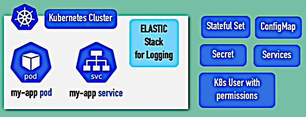
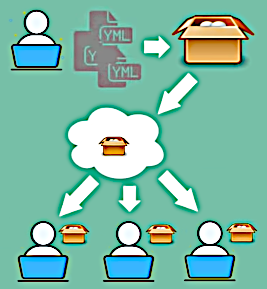
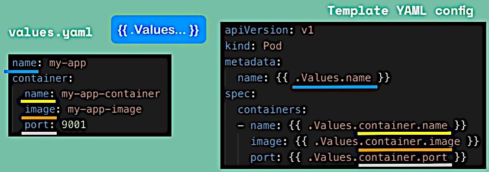

Helm Package Manager
This projects is actively developed now so it changed much from version to version. In this section just basic features of Helm are discussed.
Helm is a package manager for K8s (like apt and yum).
Helm hub | Helm charts GitHub Project | Install Helm
As for Jul 11, 2021, Helm charts GitHub Project says: "This project is no longer supported" and links to Artifact Hub.


Sometimes we need to deploy a set of components that is pretty standard among different configurations so some other users may have probably done it. Helm provides a way of collecting this bundle of YAML files (a Helm Chart) into a package and making it available for use in other K8s clusters (in the Helm Repository).
There may be public and private repositories (the latter are accessible inside companies).

It addresses the case when we have a set of microservices which YAML files are almost the same.
Helm allows to define a common blueprint for all of these microservices with placeholders that
will be replaced on deployment. The placeholders look like {{ .Values.name }}. The values are
defined in the file values.yaml or may be defined in the command line with the --set
parameter.
Allows deploying the same application in different application clusters with one command.
Helm documentation: Getting Started.
Helm charts are structured like this:
mychart/
Chart.yaml
values.yaml
charts/
templates/
...The templates/ directory is for template files. When Helm evaluates a chart, it will send all
of the files in the templates/ directory through the template rendering engine. It then
collects the results of those templates and sends them on to Kubernetes.
The values.yaml contains the default values for a chart. These values may be overridden by users
during helm install or helm upgrade.
The Chart.yaml file contains a description of the chart and can be accessed from within a
template. The charts/ directory may contain other charts (which we call subcharts).
The installation command is:
helm install <chartname>In Helm version 2 there are a client and a server part (the latter called Tiller). In this
architecture Helm copies and stores configurations on each deployment thus creating a history
of Helm executions (like install or upgrade). rollback command restores the previous
deployment state.
But the problem is that Tiller has too much permissions inside the K8s cluster that is a security issue. So in Helm version 3 Tiller was removed.